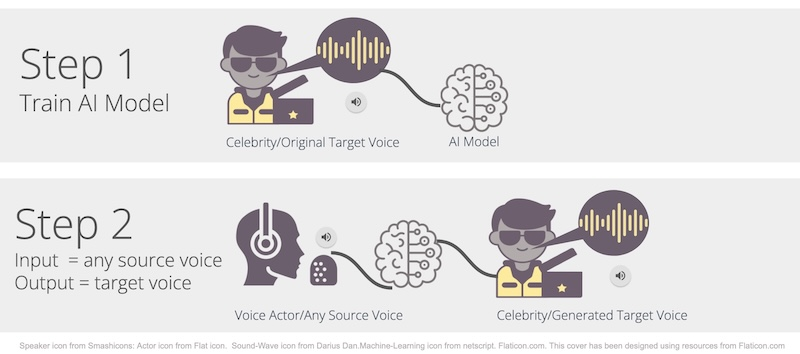
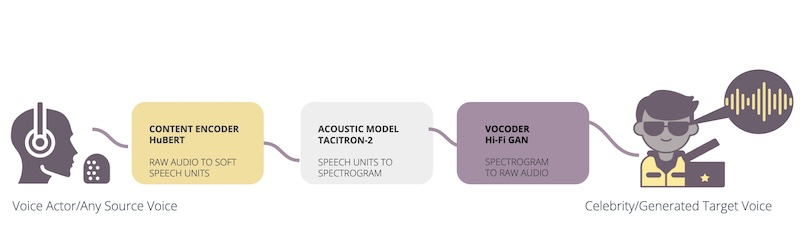
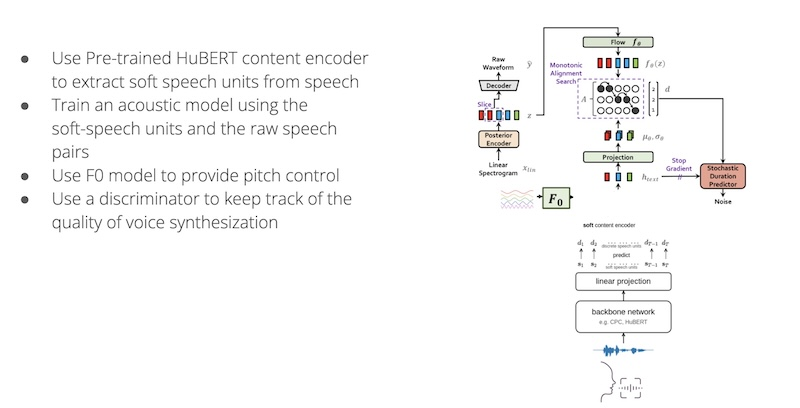
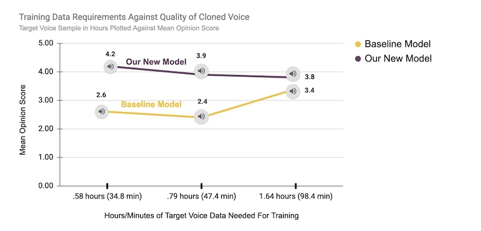

Speech-to-Speech Voice Cloning
- Generate high-quality voice clones with minimal voice data.
- Synthesize a new hybrid model for voice cloning and test performance against an open-source baseline model.
- Some use cases include the following:
- For those who have lost the ability to speak, generate speech in their own voice using archived audio clips.
- Clone celebrity voices for brand expansion and engagement.
TECHNIQUE (Models), Technology & Metrics
Technique
General Approach

Baseline Model

Synthesized Hybrid Model

Technology
- Models used
- HuBERT
- TACITRON-2
- Hi-Fi GAN
- Combined HuBERT and VITS model(our team created a new hybrid model)
- Python
- Amazon Web Services(AWS)
- Amazon SageMaker Studio
- Jupyter Notebook
Metrics
- Word Error Rate
- Word Information Lost
- Mean Opinion Score
Results Overview

Discussion
- Our newly-created hybrid model performs better than open-source baseline model with less data.
- Our newly-created hybrid model has a higher mean opinion score.
Note: Code, voice samples, and other details are available on request.